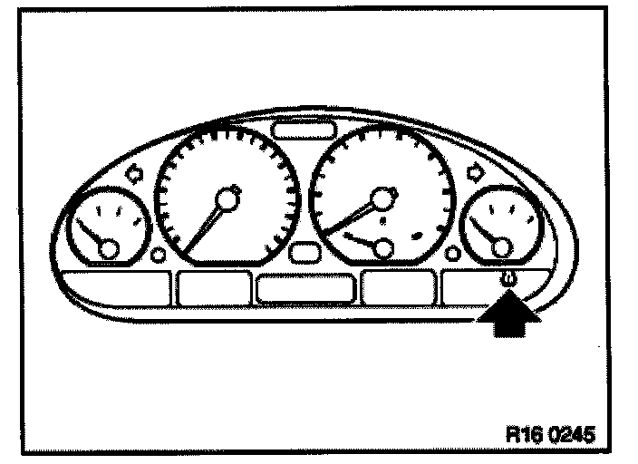
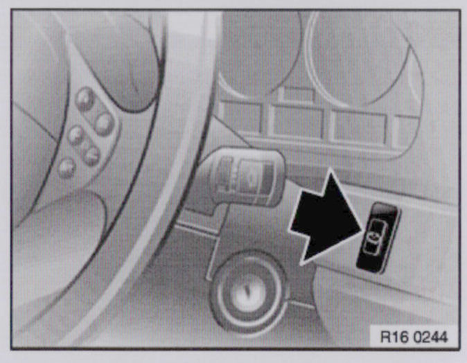

RDC & RDW Warning Systems
Warning systems
BMW AG offers two different systems to warn the driver of a drop in tire pressure.
System Description Measuring principle
RDC Tire pressure control Tire pressure/temperature
- (Available option from 03/00)
RDW Tire pressure warning Comparison of wheel speeds
- (Standard equipment)
RDC system

When a tire pressure warning light is observed, Check and inflate tire(s) to specified pressures. After correcting the air pressure with the engine off and the ignition on, press the "Set" button and hold (approx. 6 seconds) until the words "Set tire pressure" appear in the instrument cluster (instrument cluster high) or the yellow LED lights up (basic instrument cluster).
Set button

Installed in the instrument panel to the right of the steering wheel. (E46: in the centre console)
Symbol:
Tire cross-section
Task:
Initialization after resetting cold tire pressure or after changing tire or wheel location.
RDW system
When a tire pressure warning light is observed, Check and inflate tire(s) to specified pressures. After correcting the air pressure with the engine off and the ignition on, press the "Set" button and hold (approx. 6 seconds) until the words "Set tire pressure" appear in the instrument cluster (instrument cluster high) or the yellow LED lights up (basic instrument cluster).
Set button
Installed in the dashboard to the right of the steering wheel.
Symbol:
Tire cross-section with warning triangle.
Task:
Initialization after resetting cold tire pressure or after changing tire or wheel location.